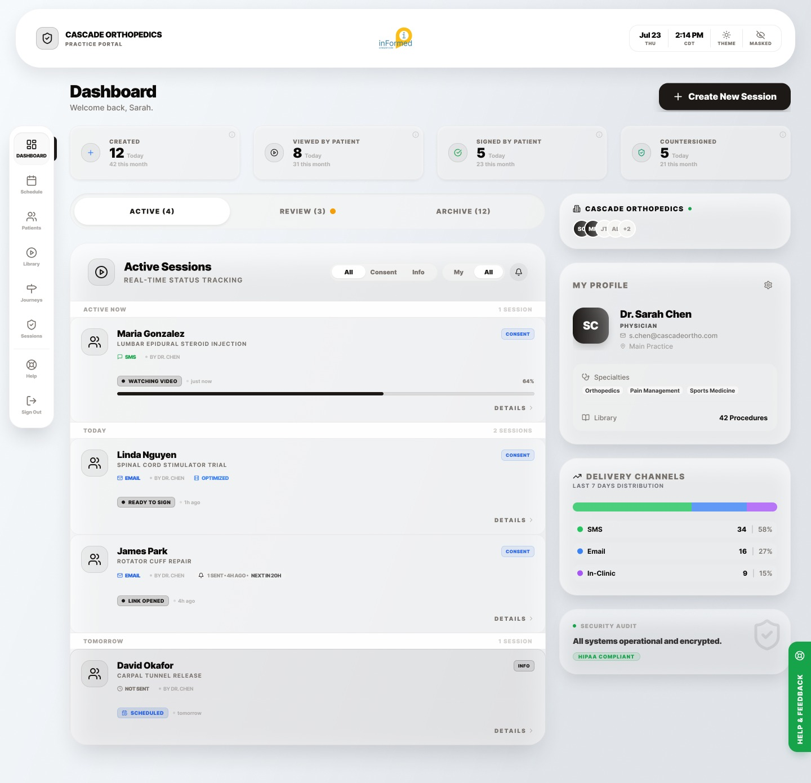
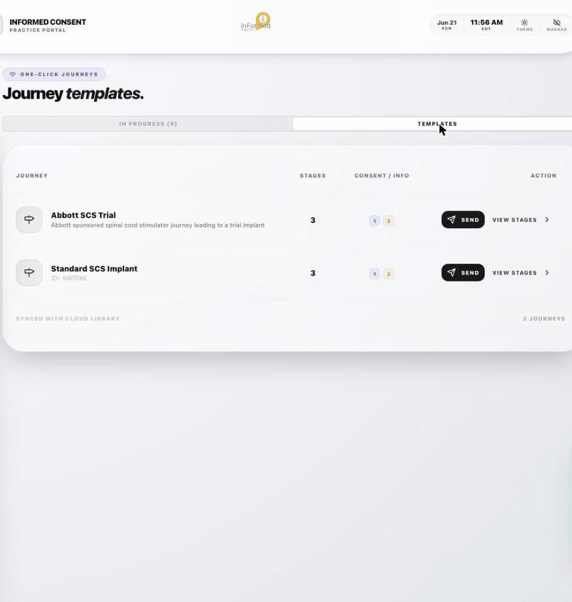
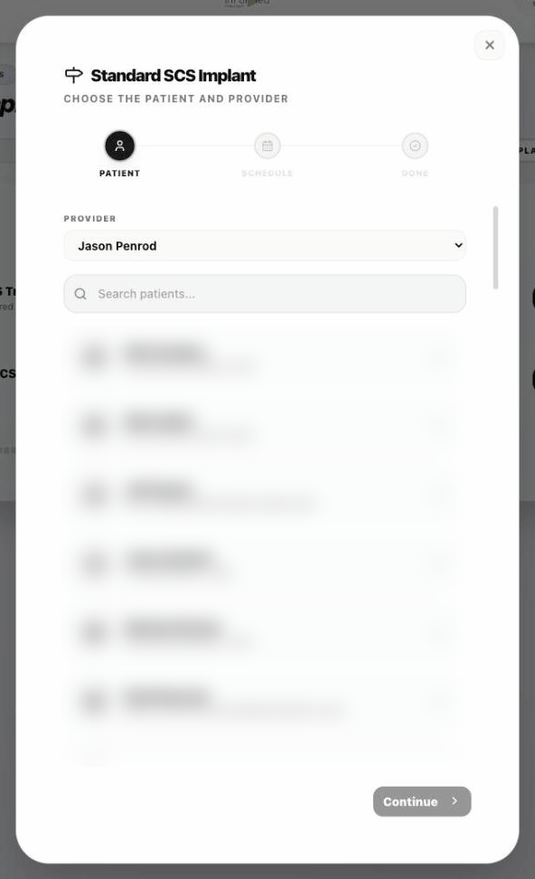
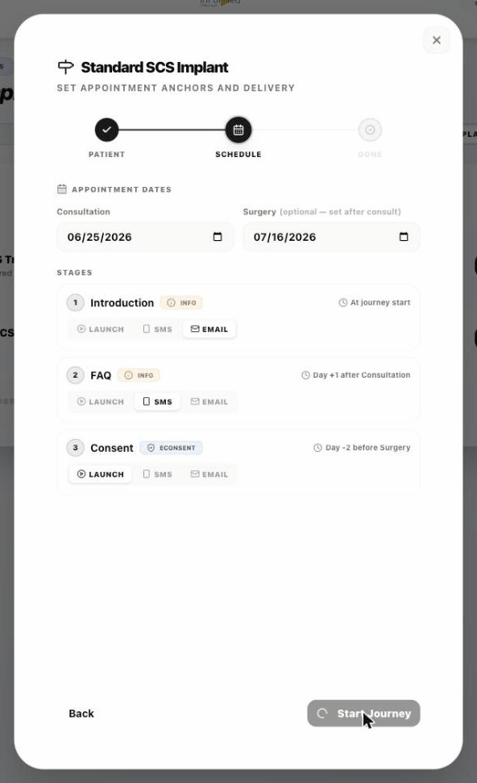
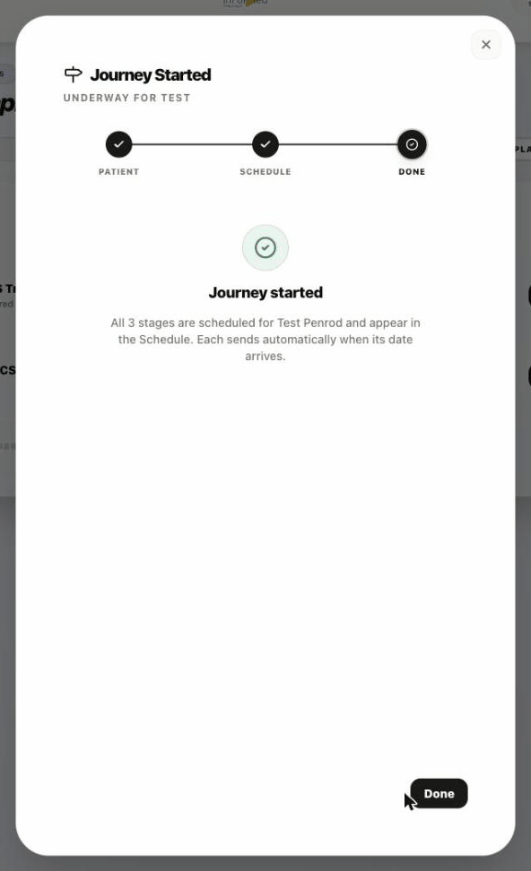
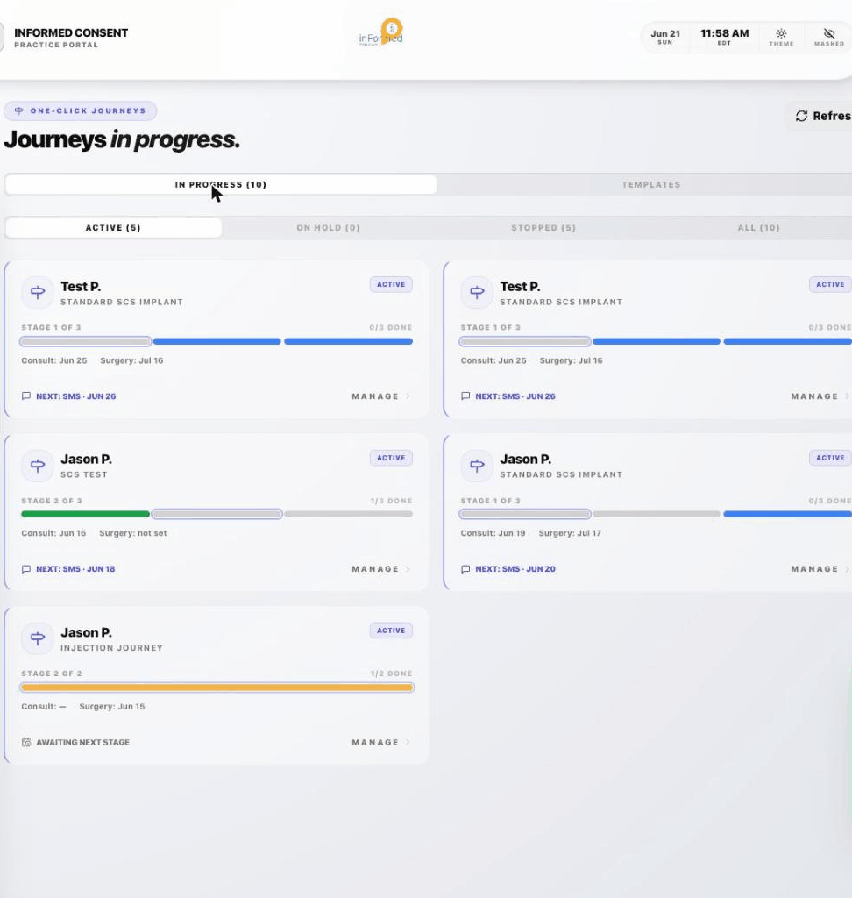

The two apps
Everything patients see gets written about. This is the other side: the portal a clinic staffer actually drives, and the admin app behind it. Two audiences, one system, and almost none of it visible from the outside.

The shape of it
The patient app is the easy one to design
A patient uses this product once. They get a link, they watch, they sign, they never come back. You can afford to be generous with their attention, explain everything, and design every screen for someone who has never seen it before.
The staff side is the opposite. A scheduler at the front desk touches it forty times a week between phone calls, on a shared machine, with a patient standing there. Nothing can require reading. Nothing can require remembering. And the whole thing has to survive the fact that the surgery date, which is what the entire sequence hangs off, usually does not exist yet when the journey starts.
That is the design problem. It resolves across two surfaces: a dashboard that says what is stuck, and a five-step flow for sending a patient down a journey. Both are below, screen by screen.
Part one · the dashboard
What a Monday morning looks like
This is the first screen after sign-in, and it has to answer one question before anybody reads a word: is anything wrong right now.
Four numbers across the top. They look like a stat row, and every dashboard has one. This one is not four metrics, it is a funnel, and the order is the whole point.
Sessions the practice sent today. The only number staff control directly.
Four never opened it. This is the gap worth chasing, and the only one a phone call fixes.
Three opened it and did not finish. A different problem, needing a different intervention.
The clinician's signature. Until this lands, the consent is not complete.
Reading left to right you get a story rather than a scoreboard. Twelve went out, four were never opened, three stalled part way, five are done. Each drop-off has a different cause and a different fix, and a practice can work the list without anybody explaining the numbers to them.
The last column is the one people forget. A patient signature does not finish a consent. The clinician has to countersign, and if that number trails the one beside it, the practice has a pile of incomplete legal records and no idea. Putting countersigned in the funnel makes the clinician's own backlog visible to the clinician.
Not how much did we do. Which of these is stuck, and who has to move it.
The session list
Grouped by when, described in verbs
Sessions sit under active now, today and tomorrow, not under a status column you sort. Same principle as the journeys board further down: a clinic schedules by day, so the software should too.
And every session says what is happening in the present tense, with a timestamp attached.
None of those is a percentage or a state name. They are descriptions of a person, which is what a scheduler is actually tracking. Ready to sign tells someone to make a call. In progress, 64 percent tells them nothing they can act on.
The one exception earns it: the patient part-way through a video gets a live bar, because that is the patented video tracking surfacing in the staff view. Someone watching right now is the one case where a percentage is a fact rather than a summary.
The right column
Three cards that answer questions nobody asked out loud
Who am I, here. Practice, colleagues, the clinician's own profile and their procedure library count. Consent is attributed to a person, so the person is on screen.
How are we reaching people. Seven days of delivery split across SMS, email and in-clinic. When more than half of everything lands by text, that changes how the content gets written.
Is this still safe. A live security audit card with the compliance state on it, in the sidebar rather than the footer.
The third one is the least obvious and the most deliberate. Compliance badges normally live in a footer or a marketing page, where they are a claim. Putting the audit state in the working sidebar makes it a reading, and a reading can be wrong in a way a badge never is. That is the point: a practice handling consent needs to be told when something has changed, not reassured that it has not.
The top of a dashboard should say what is stuck, not what got done.
Part two · the journeys
Sending one
Five screens, start to finish. This is the whole job: pick a journey, pick a patient, anchor it to two appointments, and then watch it run itself.
The unit of work is a journey, not a form
A practice does not send a consent document. It moves a patient through a sequence: an introduction, an answer to the questions everyone asks, then the consent itself. The library holds journeys, each with a stage count and a mix of information and consent steps.
Naming the object correctly closes off a whole family of bad screens. Call it a form and you get a document manager, a send button, and a patient who receives a legal PDF cold.

Provider first, then patient
Send opens a three-step wizard: patient, schedule, done. The provider selector sits above the patient search, and it is not a convenience field.
A consent is attributed to a named clinician. It is a legal artefact, not a mailing, and whoever is named on it is the one whose disclosure obligation was discharged. Putting the provider above the patient makes that ordering visible instead of burying it in a default.

Two dates, and the sequence places itself
The scheduler enters a consultation date and, if it is known, a surgery date. Every stage then schedules relative to those anchors rather than to the calendar: the introduction goes at journey start, the FAQ one day after the consultation, the consent two days before surgery. Each stage also carries its own delivery channel.
Surgery is marked optional, set after consult, and that single word carries the hardest requirement in the product. In a real clinic the surgery date does not exist yet at consultation time. A system that demands it up front is a system that never gets used. So the journey starts on one date and back-fills the second, and the consent stage stays unscheduled until it can be.

The relative schedule, in full
The channel changes down the sequence and that is deliberate too. The introduction is an email, because it can be long and it can wait. The FAQ is an SMS, because it lands the day after a consultation when the questions are actually forming and nobody opens email. The consent launches a session, because it is the only step that has to be watched.
Confirm what will happen, not that something saved
The final step does not say “success.” It says all three stages are scheduled, they appear in the Schedule, and each one sends automatically when its date arrives.
The scheduler is about to walk away and trust an automation with a legal document. A tick and the word saved answers a question nobody asked. Stating the mechanism is what lets someone stop thinking about it, which is the entire value of the feature.

A board about what is next, not what happened
Journeys in progress, filtered by active, on hold, stopped and all. Each card carries the stage position, a segmented progress bar, both appointment dates, and one line in accent colour: the next scheduled message and its date.
Most operational dashboards are activity logs pointed backwards. The only question a clinic has is whether anything is about to go wrong before an appointment, so the next action is the most prominent thing on every card and history is a click away.

Two details on that board took longer to settle than the layout. The progress bar is segmented rather than continuous, because a journey is three discrete legal events and a smooth bar implies a percentage that does not exist. And a stage that is waiting on a date the practice has not entered yet reads awaiting next stage rather than showing as stalled, because it is not a failure, it is the surgery date problem showing up again downstream.
The staff app is used forty times a week, between phone calls, with a patient standing there.
One last thing, in the top right of every screen: a masked toggle, sitting beside the theme switch. One click blanks patient-identifying text across the whole portal.
It exists because of where this software actually runs. A front-desk monitor faces a waiting room. A laptop gets turned around to show someone a date. The privacy requirement is not really about databases, it is about people walking past a screen, and that needs a control the person at the desk can hit in one motion without navigating anywhere.
Part three · the admin app
What sits behind it
The research cockpit, the governance queue and the diagnostics board all live on this side. Selected screens and commentary are being pulled together now, and land here next.
Related
Three pieces of this system, in depth
What a doctor has to disclose
A research agent reads the literature. A clinician signs what a patient will hear.
The consent session
It records you, watches whether you are looking, and will not let you skip.
The consent that never recorded
Recordings started going missing and most of them could not say why.
Have an internal app nobody wants to use?
Staff software gets designed last and used most. Tell me who has to drive it and what it costs them when it is slow.
Start the conversation